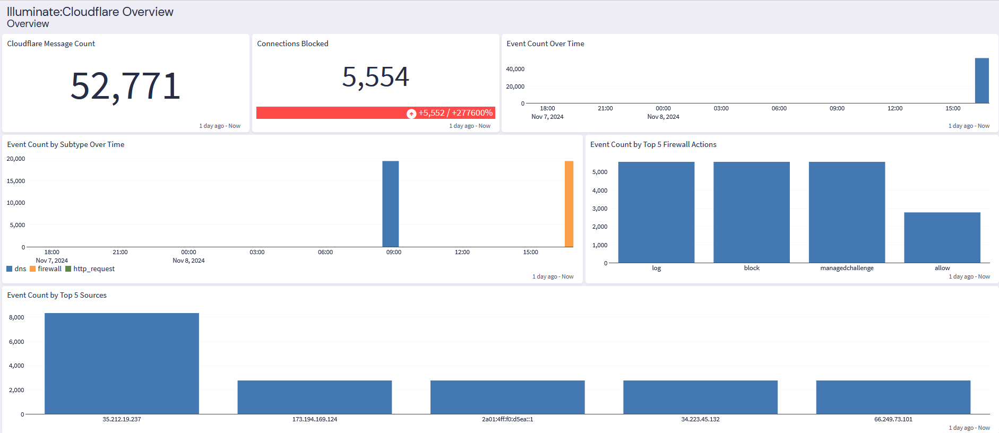
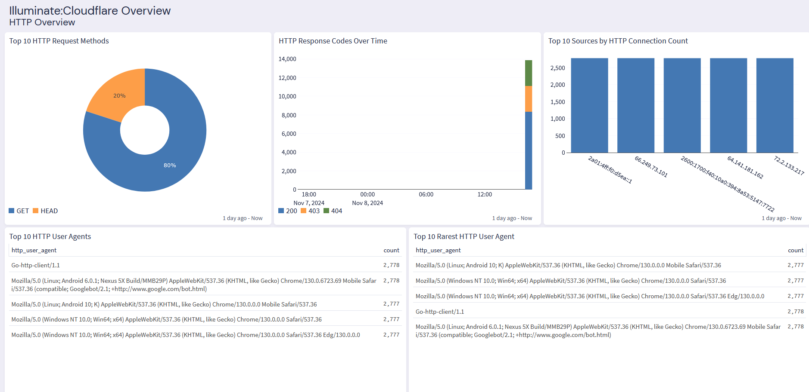
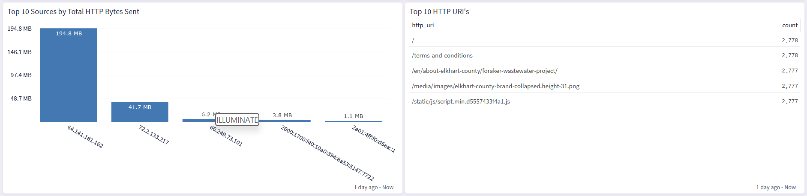

Cloudflare is a comprehensive cloud web-based security and performance platform that works by filtering out malicious traffic, preventing cyberattacks like DDoS, and optimizing content delivery to ensure faster loading times for users.
This technology pack will process Cloudflare logs, providing normalization and enrichment of those events.
Cloudflare 2024.10.2
This technology pack includes one stream:
"Illuminate: Cloudflare Falcon Messages"
This technology pack includes one index set definition:
Users can leverage Graylog's Raw HTTP input to receive logs directly from Cloudflare via its Logpush functionality. By configuring Logpush, users can define which types of logs to send (e.g. HTTP requests, firewall events) and specify Graylog as the destination endpoint. This allows seamless log forwarding from Cloudflare to Graylog for centralized log analysis. For detailed instructions please refer to the Graylog documentation on setting up Logpush with the Raw HTTP input.
{"Action":"log","ClientASN":209,"ClientASNDescription":"CENTURYLINK-US-LEGACY-QWEST","ClientCountry":"us","ClientIP":"205.186.39.189","ClientIPClass":"noRecord","ClientRefererHost":"","ClientRefererPath":"","ClientRefererQuery":"","ClientRefererScheme":"","ClientRequestHost":"cloudtest.life","ClientRequestMethod":"GET","ClientRequestPath":"/","ClientRequestProtocol":"HTTP/1.1","ClientRequestQuery":"","ClientRequestScheme":"http","ClientRequestUserAgent":"Mozilla/5.0 (Windows NT 6.1; Win64; x64) AppleWebKit/537.36 (KHTML, like Gecko) Chrome/83.0.4103.61 Safari/537.36","ContentScanObjResults":[],"ContentScanObjSizes":[],"ContentScanObjTypes":[],"Datetime":"2024-10-16T14:03:41Z","Description":"Test_WAF","EdgeColoCode":"DFW","EdgeResponseStatus":404,"Kind":"firewall","LeakedCredentialCheckResult":"none","MatchIndex":0,"Metadata":{"ruleset_version":"2","version":"1","type":"customer"},"OriginResponseStatus":404,"OriginatorRayID":"00","RayID":"8d389800b7c76c57","Ref":"","RuleID":"af14fd3aedda46898b13c9d033ad0a5f","Source":"firewallcustom"}
HTTP RequestsFirewall EventsDNS logsThe Cloudflare content pack supports parsing and GIM categorization for the HTTP Request, Firewall Events, and DNS Logs events.


